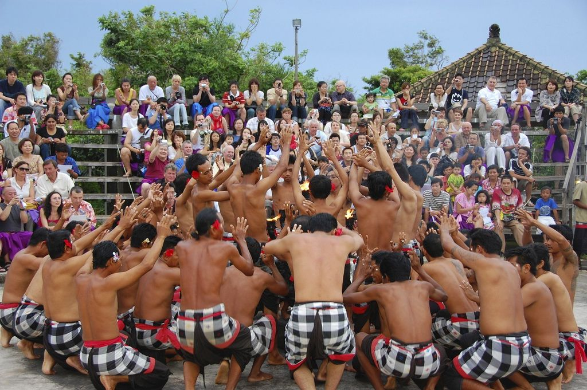
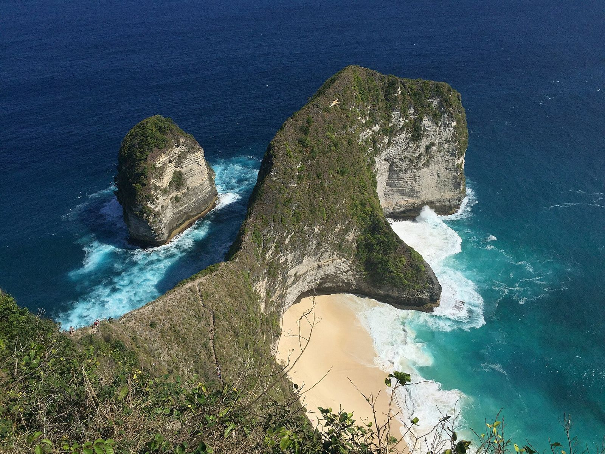
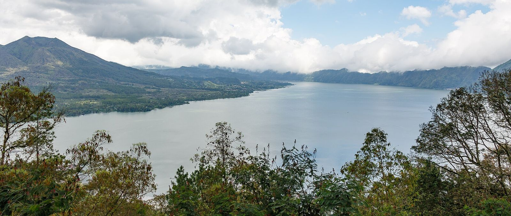
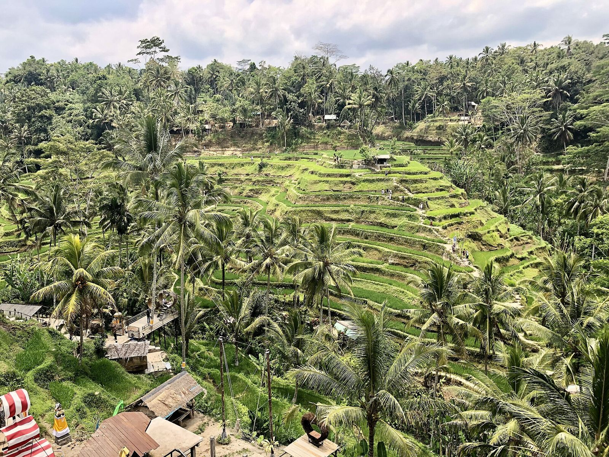
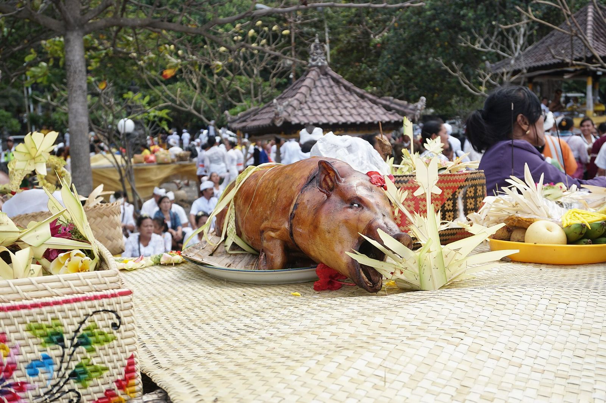

Gianyar
Ubud
Pusat seni dan budaya Bali. Terkenal dengan Puri Ubud, pasar seni, galeri, serta Mandala Suci Wenara Wana (Monkey Forest).
Kami lahir dan besar di Bali — tumbuh bersama upacara odalan, alunan gamelan, dan kehidupan banjar. Kami tahu jalan menuju sudut tersembunyi, jam terbaik ke pura sebelum ramai, warung lokal yang benar-benar enak, dan tata krama di setiap tempat suci. Bersama DEVAN TOUR, Anda tidak sekadar diantar sopir — Anda ditemani sahabat lokal yang siap berbagi cerita di balik setiap tempat.
Enam alasan liburan Anda terasa lebih dekat dengan Bali yang sesungguhnya.
Kami bukan pendatang yang menghafal brosur. Budaya, adat, dan bahasa Bali adalah keseharian kami — dan kami senang membaginya dengan Anda.
Suka pantai, pura, sawah, atau kuliner? Kami susun rute sesuai minat Anda, plus saran sudut-sudut yang jarang masuk daftar wisata.
Kami tahu kapan pura masih sepi, kapan cahaya paling indah untuk foto, dan cara menghindari macet di jalur ramai.
Semua biaya dijelaskan sejak awal. Tanpa biaya tersembunyi, tanpa kejutan di akhir perjalanan.
Dijemput dan diantar kembali ke hotel atau vila Anda dengan mobil ber-AC yang bersih dan sopir yang ramah.
Tanya apa saja — dari tempat makan hingga tata krama di pura. Kami menjawab dengan cepat dan ramah, sebelum dan selama tur.

Bagi kami, Bali bukan sekadar destinasi — Bali adalah rumah. Sejak kecil kami ikut menghaturkan canang, menabuh dan menari saat odalan, serta ngayah bersama warga banjar. Dari situlah kami belajar bahwa setiap pura, setiap sawah, dan setiap tarian punya makna.
Itulah yang ingin kami bagikan. Saat berdiri di depan Pura Tirta Empul, Anda akan tahu mengapa umat datang untuk melukat. Saat menyaksikan Kecak di Uluwatu, Anda akan mengerti kisah Ramayana yang dilantunkan. Saat makan siang, kami ajak ke warung tempat orang lokal makan.
“Kami ingin Anda pulang bukan hanya dengan foto, tetapi dengan cerita — dan rasa ingin kembali lagi ke Bali.”
Bali adalah provinsi di Indonesia yang terletak di antara Pulau Jawa dan Lombok, dengan ibu kota Denpasar. Mayoritas penduduknya memeluk agama Hindu Bali, sehingga pulau ini dikenal dengan julukan Pulau Dewata dan Pulau Seribu Pura.
Lanskap budaya Bali, termasuk sistem irigasi subak, telah diakui UNESCO sebagai Warisan Dunia pada tahun 2012. Dari pantai selatan yang ramai hingga dataran tinggi yang sejuk di sekitar Danau Beratan dan Gunung Batur, Bali menawarkan pengalaman yang beragam.

Pusat seni dan budaya Bali. Terkenal dengan Puri Ubud, pasar seni, galeri, serta Mandala Suci Wenara Wana (Monkey Forest).

Pura di atas batu karang di tepi laut. Saat air pasang, pura tampak seperti mengapung — paling indah menjelang matahari terbenam.

Pura Luhur Uluwatu di puncak tebing Semenanjung Bukit. Sore hari ada pertunjukan Tari Kecak berlatar matahari terbenam.

Pulau di tenggara Bali, dicapai dengan kapal cepat dari Sanur. Ikonik dengan Pantai Kelingking dan spot menyelam bersama pari manta.

Kawasan pantai yang populer untuk berselancar, belanja, kafe, dan menikmati senja.

Panorama Gunung dan Danau Batur. Pendakian subuh untuk melihat matahari terbit sangat populer.

Sawah terasering di utara Ubud yang diairi dengan sistem subak tradisional — pemandangan hijau khas Bali.

Pura Lempuyang Luhur di lereng Gunung Lempuyang — salah satu pura tertua dan suci di Bali, terkenal dengan gerbang candi bentarnya.
Contoh rute di bawah dapat disesuaikan. Harga segera hadir.
Desa kerajinan, sawah, pura air suci, dan panorama Batur.
 Rp 700.000⏱ Full day (8–10 jam)
Rp 700.000⏱ Full day (8–10 jam)Rafting, ATV, ayunan Alas Harum, Bali Bird & Reptile Park, dan Pura Tirta Empul dalam satu hari.
Harga segera hadir⏱ Setengah hari (siang–malam)Pantai, patung ikonik, dan Tari Kecak di tebing saat senja.
Tebing dan pantai ikonik di sisi barat Nusa Penida.
Hari Raya Tahun Baru Saka. Seluruh Bali hening selama 24 jam: tanpa api, tanpa bepergian, tanpa hiburan — bahkan bandara ditutup. Malam sebelumnya diarak ogoh-ogoh.
Dirayakan setiap 210 hari menurut kalender Pawukon, menandai kemenangan dharma atas adharma. Jalan dihiasi penjor bambu yang menjulang.
Kecak dibawakan puluhan penari pria yang melantunkan "cak" mengiringi kisah Ramayana. Legong adalah tari klasik yang anggun dengan gerak mata dan jari yang detail.
Sistem pengairan sawah tradisional berbasis filosofi Tri Hita Karana — keharmonisan dengan Tuhan, sesama, dan alam. Diakui UNESCO pada 2012.

Musim kemarau (sekitar April–Oktober) umumnya paling cerah. Musim hujan sekitar November–Maret. Perhatikan tanggal Nyepi saat merencanakan.
Sewa mobil dengan sopir, taksi resmi, ojek/taksi daring, atau sewa motor (wajib SIM dan helm). Kapal cepat ke Nusa dari Sanur.
Kenakan kamen/sarung dan selendang, berpakaian sopan, jangan memanjat bangunan suci, dan jangan melangkahi sesajen (canang).
Rupiah (IDR). Tukar uang di money changer resmi, ATM mudah ditemukan, dan pembayaran QRIS banyak diterima.
Jelajahi Bali bersama pemandu lokal asli Bali. Slot tur kami terbatas setiap harinya — pesan lebih awal agar tanggal pilihanmu aman.